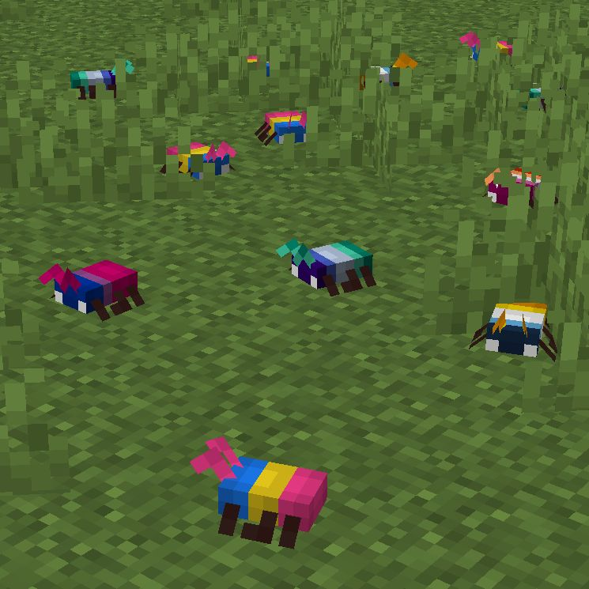

I just realized that Modrinth is celebrating Pride Month!!🥹🥹 thanks for that.🏳️⚧️🏳️⚧️

Modrinth 🏳️🌈 🏳️⚧️
@modrinth
🏳️🌈 Featured projects 🏳️⚧️
🏳️⚧️ Manufacture your own estrogen and unlock girl power!
⚠️ Take control of your tooltips!
🪳 Fill your world with friendly bugs!
🏷️ Represent yourself with flags and pronouns!
and much more!
https://t.co/0PqKiZF7sw https://t.co/UCHVjuu65d